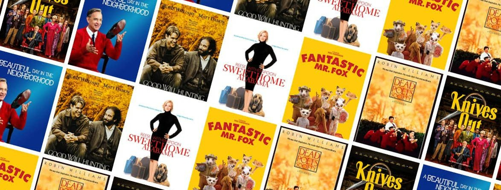

This project explores customer risk prediction in a financial context using machine learning techniques, including Logistic Regression, Support Vector Machines, Decision Trees, and Random Forests. The final model, tuned through cross-validation, achieves a precision rate of 77.6 % in classifying customers. These findings provide valuable insights for improving risk assessment in financial scenarios.
Key Skills/Tools: Python, Data Preprocessing, Machine Learning, Model Evaluation
This project focuses on predicting customer churn for a telecommunications company using R. It includes data preparation, the development of various machine learning models (logistic regression, decision tree, bagging, boosting, and random forest), and model evaluation using metrics like hit rate, top-decile lift, and the GINI coefficient.
Key Skills/Tools: R, Data Preprocessing, Machine Learning, Model Evaluation

Within this project, I developed predictive models aimed at forecasting future bike rentals in London. The initial phase involved foundational data cleaning to optimize the dataset for seamless visualization in Tableau. Subsequently, Exploratory Data Analysis is conducted to gain a deeper insight into the dataset. This understanding set the stage for subsequent activities such as modeling and feature engineering.
Key Skills/Tools: Python, Data Cleaning, Exploratory Data Analysis, Machine Learning with SKLEARN, Random Forest Regressor, Gradient Boosting Regressor, Feature Engineering
Using SQL, the project involves extracting valuable insights and patterns from COVID-19 datasets. It includes tasks such as data retrieval, data cleaning, and in-depth exploration of COVID-19 cases. The project aims to uncover trends, geographical patterns, and statistical information to aid in understanding the pandemic's impact and informing public health strategies.
Key Skills/Tools: SQL, Data Joining, Data Exploration
This project involves a simple data cleaning and transformation using SQL.
It encompasses standardizing data formats, handling duplicate values, and optimizing data for
analysis.
Key Skills/Tools: SQL, Data Cleaning, Data Standardization, Data Transformation, Problem-Solving

In this project, I analyzed the correlation and relationships between box office revenues and various movie-related variables. Using statistical techniques and data visualization, I revealed which variables are associated with higher or lower earnings. This data-driven insight is invaluable for filmmakers and industry professionals, offering a deeper understanding of revenue dynamics in the film world.
Key Skills/Tools: Python, Statistical Analysis, Data Interpretation

In this project, data extraction, analysis, and visualization techniques are applied to economic data. The project uses Python to import data from various sources, including the S&P 500, state-level unemployment rates, and labor force participation. Key visualizations include S&P 500 time series, state-level unemployment comparisons, and a focus on New York's 2020-2022 unemployment and participation rates.
Key Skills/Tools: Python, Data Extraction (Fred API), Data Import & Processing, Data Visualization (matplotlib, Plotly Express)
This project involves a short Exploratory Data Analysis of roller coaster data. Using Python and popular data analysis libraries, I explore a dataset containing information about roller coasters. The project encompasses data cleaning, analysis, and visualization to gain insights into coaster features, construction materials, and their geographic distribution.
Key Skills/Tools: Python, Data Import & Cleaning, Data Visualization, Correlation Analysis
Discover my Tableau projects. Click here to explore data with interactive visuals and dashboards.